1. Instal·lació del sistema operatiu
He fet aquesta instal·lació dins d'una màquina virtual amb VirtualBox, amb Ubuntu 26.04 LTS. Aquest pas és irreversible,
així que revisa bé el disc de destinació.
-
Crear la màquina virtual.
Nom
ubudesk26.04, carpeta /home/alumnat/VirtualBox VMs
i imatge ISO (baixada a la carpeta Baixades) ubuntu-26.04.1-desktop-amd64.iso.
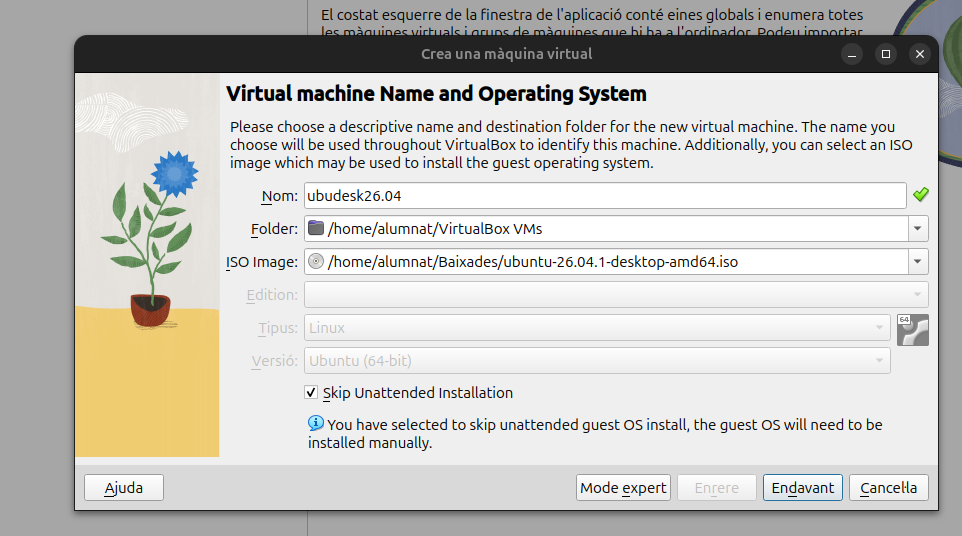
-
Creació del disc dur virtual.
Disc de 30 GB.
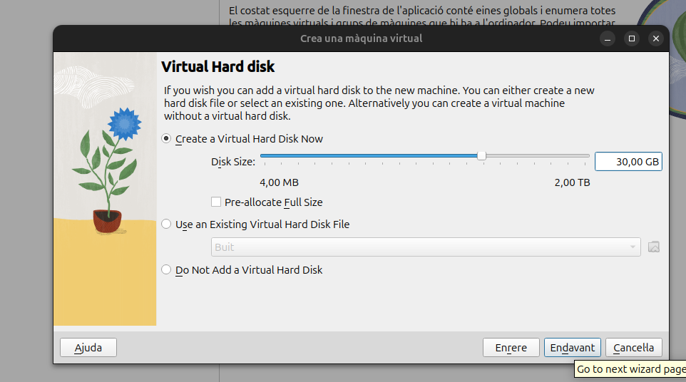
-
Configurar el particionat del disc.
Particions: / (10 GB), /home (15 GB) i /boot (2 GB).
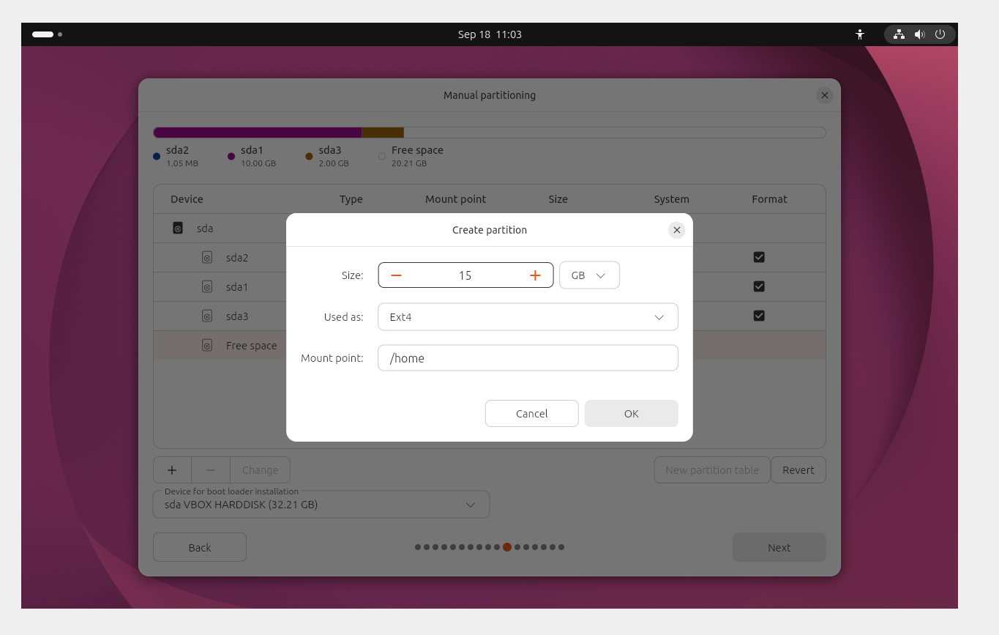
/home (15 GB): partició on es guarden els fitxers personals de l'usuari, separada del sistema.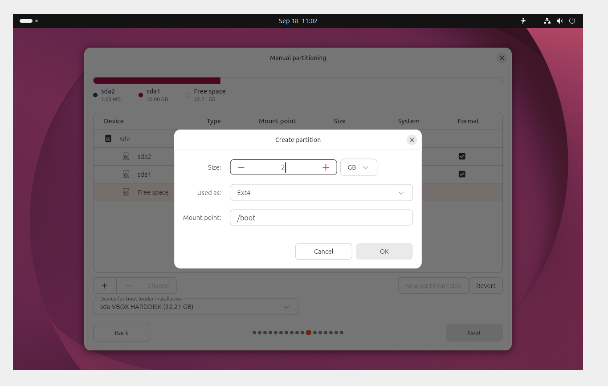
/boot (2 GB): partició on es guarden els fitxers d'arrencada, com el nucli i GRUB.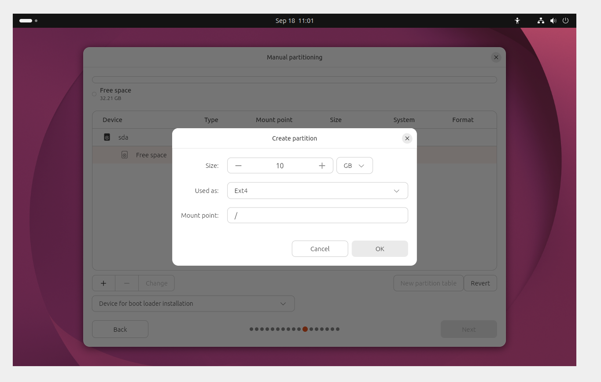
/ (10 GB): partició principal on s'instal·la el sistema operatiu i les aplicacions.
↑ Tornar a l'índex
2.Virtualització
Aquesta captura mostra la configuració de la màquina virtual a VirtualBox. S’ha assignat 6144 MB de memòria RAM, que és la memòria que la màquina virtual pot usar de l’ordinador real, i 3 processadors virtuals. Amb aquests recursos Ubuntu funciona sense afectar el sistema principal.
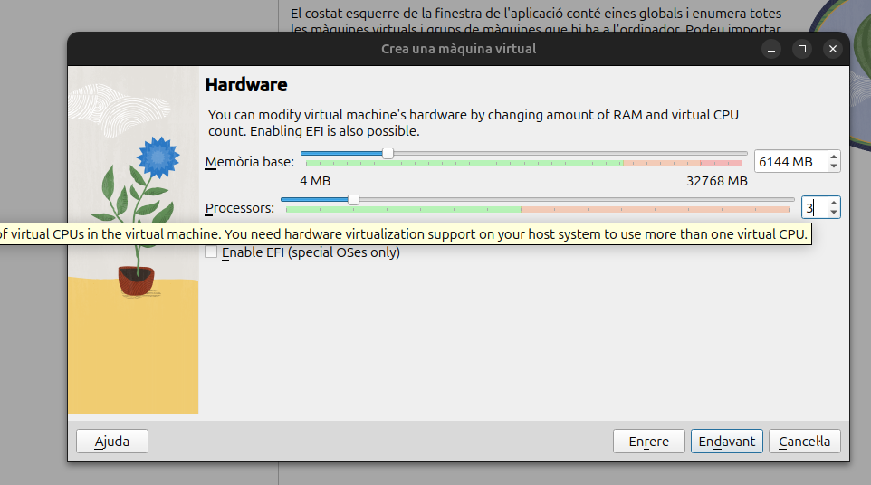
↑ Tornar a l'índex
5. Comandes generals
Ordres bàsiques per moure's pel sistema i gestionar fitxers.
Navegar
pwd: mostra la carpeta on som.
ls -l: llista el contingut de la carpeta amb més detall.
cd carpeta: entra a una carpeta. cd .. puja una carpeta. cd ~ torna a la carpeta personal.
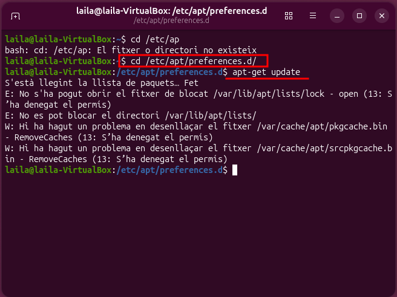
Crear, copiar, moure i esborrar
mkdir carpeta: crea una carpeta.
touch fitxer.txt: crea un fitxer buit.
cp origen destí: copia un fitxer. mv origen destí el mou o el renombra.
rm fitxer.txt: esborra un fitxer. rm -r carpeta esborra una carpeta i el seu contingut.
Editar fitxers amb nano
nano notes.txt: obre el fitxer, o el crea si no existeix. Escriu el text.
Ctrl + O i després Enter: guarda els canvis.
Ctrl + X: surt de nano.
cat notes.txt: mostra el contingut del fitxer sense obrir-lo.
Permisos
sudo davant d'una ordre la fa com a administrador, quan cal permisos.
↑ Tornar a l'índex
6. Instal·lacions aplicacions
apt update
Actualitza la llista de paquets disponibles.
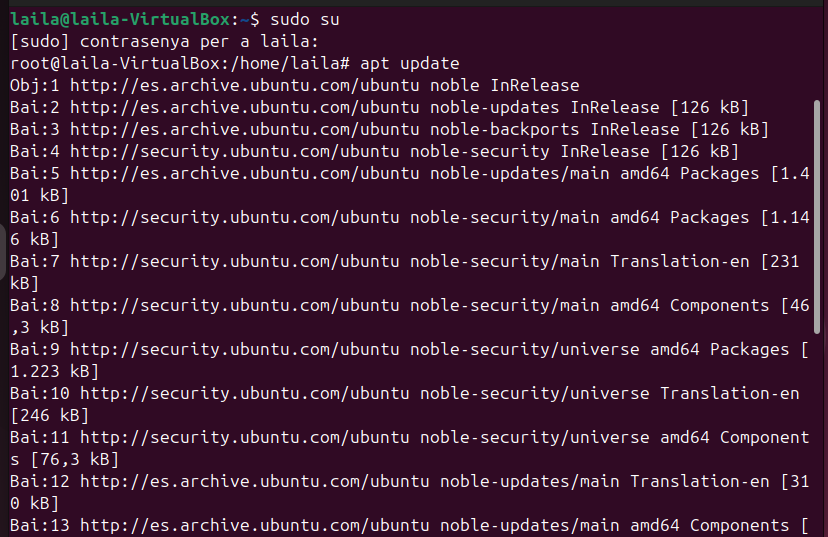
apt upgrade
Actualitza els paquets instal·lats a la versió més recent.
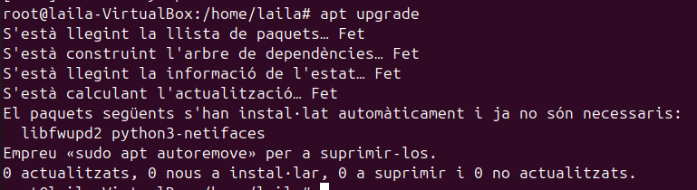
apt install cmatrix
Instal·la cmatrix, un programa que mostra l'efecte de pluja de Matrix a la terminal. Surt amb q.
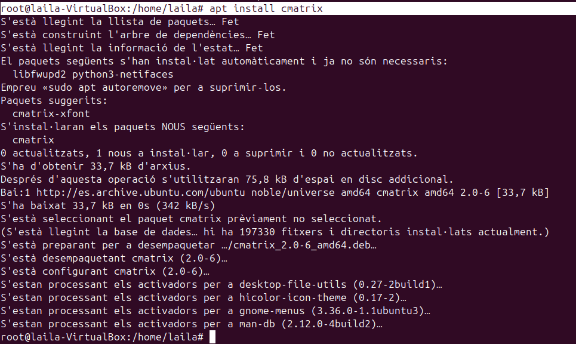
aptitude install figlet
Instal·la figlet, que escriu text en lletres grans. aptitude també elimina les dependències que ja no calen.
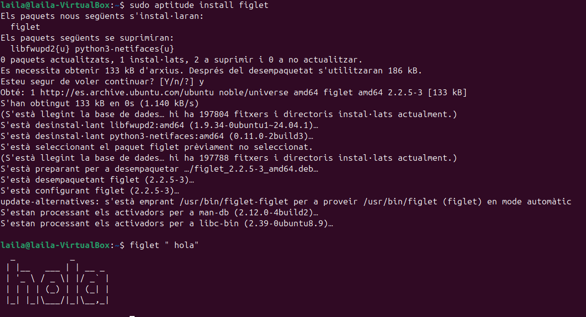
aptitude remove figlet
Desinstal·la figlet i manté la configuració.
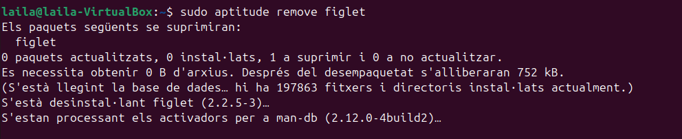
aptitude purge figlet
Desinstal·la figlet i esborra també la configuració.
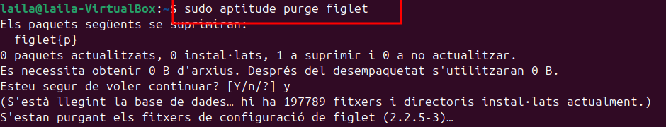
aptitude show figlet
Mostra la informació del paquet, encara que no estigui instal·lat.
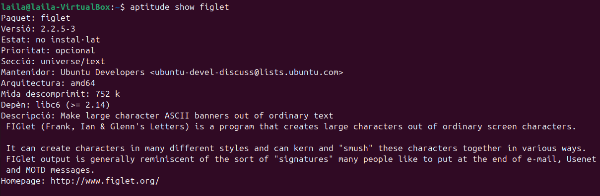
Instal·lació des d'un fitxer .deb
Instal·la un paquet des d'un fitxer .deb del disc. No resol dependències.
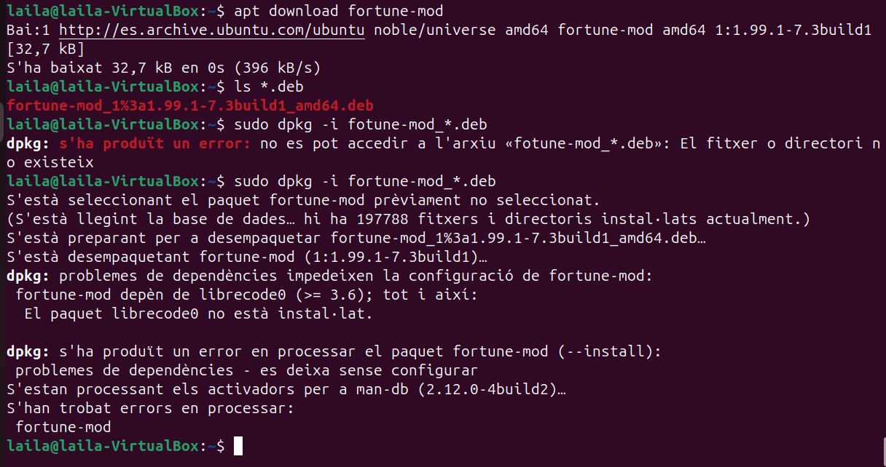
apt -f install corregeix les dependències que falten.
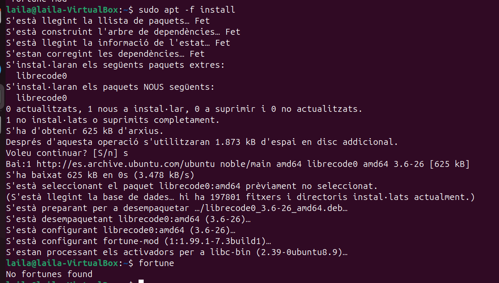
El programa fortune necessita fortunes-min per mostrar frases.
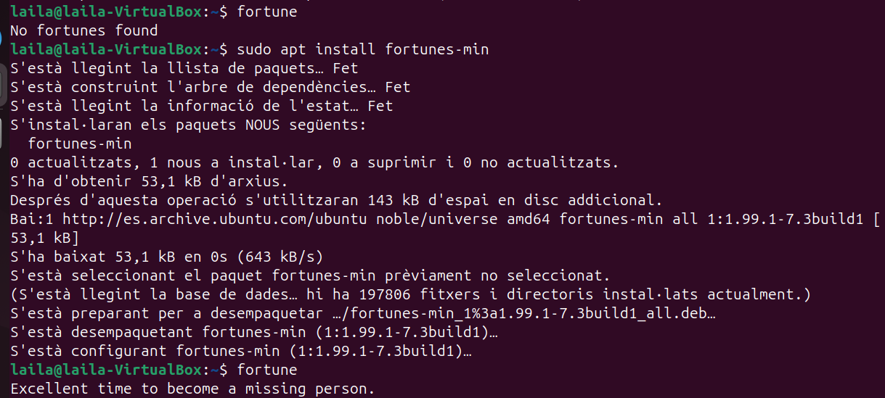
Desinstal·lació i estat amb dpkg
dpkg -r desinstal·la el paquet i manté la configuració.
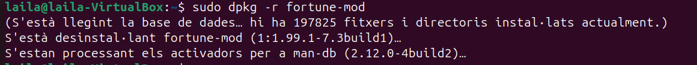
dpkg -P desinstal·la el paquet i esborra la configuració.
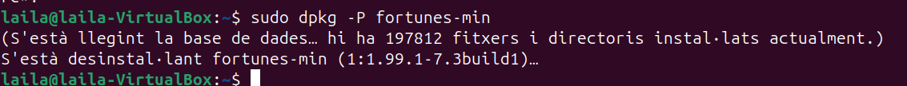
dpkg -s mostra l'estat i la informació del paquet.
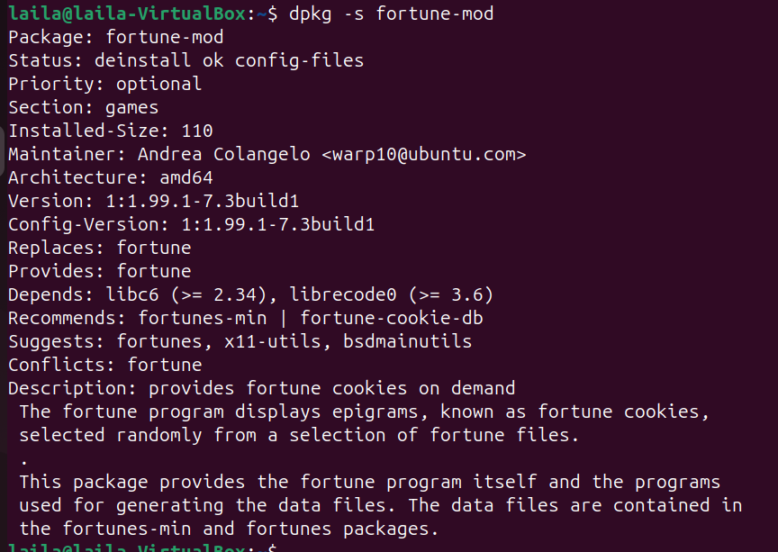
dpkg --get-selections | grep busca un paquet a la llista del sistema.
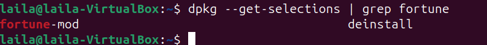
↑ Tornar a l'índex